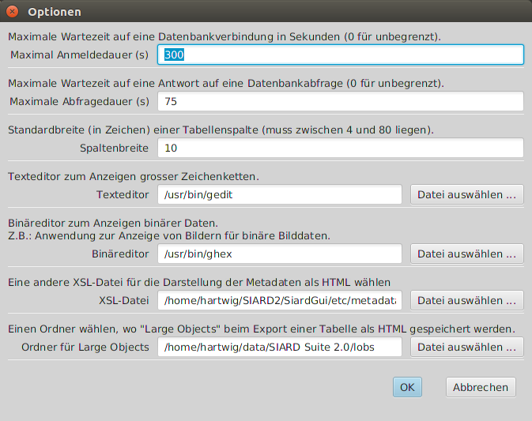

SIARD Suite 2.2 - Menü von SiardGui
Die folgenden Menüpunkte sind im SiardGui verfügbar:
- Datei / Herunterladen ...
- Datei / Kürzlich heruntergeladen
- Datei / Hochladen ...
- Datei / Kürzlich hochgeladen
- Datei / Öffnen ...
- Datei / Kürzlich geöffnet
- Datei / Speichern
- Datei / Schliessen
- Datei / Metadaten anzeigen ...
- Datei / Metadaten anreichern ...
- Datei / Exit
- Bearbeiten / Alles kopieren
- Bearbeiten / Kopieren
- Bearbeiten / Tabelle exportieren ...
- Bearbeiten / In Metadaten finden ...
- Bearbeiten / Nächste Fundstelle in Metadaten
- Bearbeiten / In Tabellendaten suchen ...
- Bearbeiten / Nächste Fundstelle in Tabelle
- Extras / Installieren ...
- Extras / Deinstallieren
- Extras / Sprache
- Extras / Integrität prüfen ...
- Extras / Optionen ...
- ? / Hilfe
- ? / Info
Die Menüpunkte sind deaktiviert, wenn sie in der aktuellen Situation nicht angewendet werden können. Deshalb sind anfangs nur Herunterladen ... und Öffnen ... verfügbar.
Datei / Herunterladen ...
Nach Anwählen dieses Menüpunkts erscheint ein Dialog, wo die Verbindungsdaten für die Datenbank eingegeben werden können.
Das lange Texteingabefeld in der Mitte muss mit einer JDBC URL gefüllt werden und der Archivbenutzer und sein Passwort müssen eingetragen werden. Sofern nur Metadaten heruntergeladen werden sollen (etwa, um sich erst einen Überblick über die Ausmasse der Datenbank zu verschaffen), muss das Kästchen "Nur Metadaten" angewählt werden. Wenn Ansichten als Tabellen heruntergeladen werden sollen (etwa weil nur Ansichten, nicht aber deren Basistabellen für den Archivbenutzer sichtbar sind), muss das Kästchen "Ansichten als Tabellen archivieren" angewählt werden.
Der Servername, der Datenbankordner und der Name der Datenbank oben, dienen nur dazu, die korrekte URL für das Datenbank Managemend System (DBMS) herzustellen. Werden diese Werte verändert, ändern die Beispiel-URLs, die für jedes von SIARD unterstützte DBMS angezeigt werden. Aktivieren der Schaltfläche URL kopieren neben einer Beispiel-URL, kopiert diese ins Eingabefeld für die JDBC URL.
Es kann aber jede beliebige Zeichenkette als JDBC URL eingegeben werden. So können spezifische Sicherheitskonfigurationen berücksichtigt werden, wie eine Windows Anmeldung oder Kerberos. Die spezifischen Definitionen der JDBC URLs müssen in der Dokumentation des Anbieters des DBMS nachgeschlagen werden, wenn die hier präsentierten Standards ungenügend sind (s. Database Management Systeme).
Es ist allgemein eine schlecht Idee, den Datenbank-Administrator (DBA, root, dbo, SYSTEM, sa, dbadmin, ...) für das Herunterladen eines SIARD-Archivs zu verwenden. SIARD lädt alle Daten als eine Datenbank in das Archiv, auf die der verwendete Datenbank-User lesend zugreifen kann. Der globale Datenbank-Administrator kann lesend auf alle Datenbanken des DBMS und auf viele Systemtabellen zugreifen, die nicht archiviert werden sollen. Deshalb ist es wichtig, als Vorbereitung auf das Herunterladen einen geeigneten Archivierungsbenutzer zu finden oder zu erzeugen.
Wenn die Verbindung zur Datenbank nicht zustandkommt, wird der Dialog so lange wieder angezeigt, bis entweder eine gültige JDBC URL eingegeben wurde oder Abbrechen gewählt wurde. Falls Nur Metadaten angekreuzt war, wird ein temporäres SIARD-Archiv erzeugt, das nach Beenden des Programms gelöscht wird. (Man kann aber die heruntergeladenen Metadaten editieren, anzeigen und exportieren, bevor man das Archiv schliesst.) Andernfalls muss man als Nächstes den Namen und Ordner wählen, wo das SIARD-Archiv angelegt werden soll.
Dann beginnt der Download.
Wenn das Herunterladen erfolgreich war, kann der Dialog mit der Schaltfläche OK geschlossen werden. Die heruntergeladenen Daten erscheinen dann im Hauptfenster. Dort sollten weitere Metadaten eingegeben werden, mindestens ein Name für die Datenbank, der Dateneigentümer vor der Archivierung und der Entstehungszeitraum der Daten.
Wenn das Herunterladen erfolgreich war, wird die benutzte JDBC-URL in der Liste der kürzlich genutzten Verbindungsdaten eingetragen, welche mit dem nächsten Menüpunkt abgerufen werden kann.
Datei / Kürzlich heruntergeladen
Die zuletzt für das Herunterladen benutzten Verbindungsdaten werden unter diesem Menüpunkt zur Auswahl angeboten. Wird ein Eintrag gewählt, erscheint der Verbindungsdialog mit ausgefüllter JDBC URL und Datenbank-User. Nur das Passwort muss dann noch ergänzt werden.
Datei / Hochladen ...
Nach Anwählen dieses Menüpunkts, erscheint ein Dialog, wo die Verbindungsdaten zur Datenbank eingegeben werden können.
Die JDBC URL kann auf die gleiche Weise aus Datenbankserver, Datenbanknamen und Datenbankordner zusammengesetzt und kopiert werden wie im Verbindungsdialog für das Herunterladen. Da der Inhalt von SIARD-Dateien unabhängig vom DBMS ist, können die Daten in eine Instanz eines anderen DBMS hochgeladen werden.
Zusätzlich kann man wählen, ob Typen und Tabellen mit demselben Namen überschrieben werden sollen. Dies ist gefährlich, wenn man sich als Datenbank-Administrator mit sehr vielen Rechten verbindet, aber nützlich, wenn man mehrmals dieselbe Datenbank hochladen will.
Wenn Nur Schema angekreuzt ist, werden nur die Datenbankschemas, (Typen und leere Tabellen) erzeugt, ohne dass dann die Primärdaten hochgeladen werden.
Ganz unten auf dem Dialog ist eine Liste aller Schemas aufgeführt, die in der SIARD-Datei vorkommen. Für das Hochladen kann hier festgelegt werden, in welche Schemas der Datenbank-Instanz die Schemas aus der SIARD-Datei geladen werden sollen. Diese Schemas müssen vor dem Hochladen angelegt werden. Der Datenbank-User, der in diesem Dialog eingetragen ist, muss das Privileg haben, in diesen Schemas Typen und Tabellen zu erzeugen. Es ist daher oft am einfachsten, für das Hochladen das Konto eines Datenbank-Administrators zu benutzen, der alle Schreibrechte hat.
Falls das Ziel-DBMS keine UDTs oder ARRAYs unterstützt, werden die Daten "verflacht" hochgeladen. D.h. jeder UDT or ARRAY wird hochgeladen, indem eine separate Spalte für jede Komponente erzeugt wird.
Wenn die Erzeugung von Typen und Tabellen und das Hochladen der Primärdaten erfolgreich war, gilt das Hochladen als erfolgreich. Manche Typen und Tabellen wurden möglicherweise umbenannt, um Längenbeschränkungen für Bezeichner des Zielsystems gerecht zu werden. In solchen Fällen wird das weggelassene Suffix eines langen Bezeichners durch eine Zahl ersetzt.
Erst am Ende des Hochladens wird versucht, die Einschränkungen (Eindeutigkeit, Referenzen) zu aktivieren. Das kann scheitern, da verschiede DBMS von Standard SQL:2008 abweichende strengere Regeln befolgen als andere. Ein solches Scheitern wird im Tab Err des Hochladedialogs angezeigt.
War das Hochladen erfolgreich, wird die verwendete JDBC URL in einer Liste der kürzlich benutzten Verbindungsdaten eingetragen, welche unter dem nächsten Menüpunkt abgerufen werden kann.
Datei / Kürzlich hochgeladen
Die JDBC URLs kürzlich benutzter Verbindungen für das Hochladen von Datenbanken stehen unter diesem Menüpunkt zu Verfügung. Wird eine davon angwählt, öffnet sich der Verbindungsdialog mit der entsprechenden JDBC URL und dem Datenban-User. Passwort und Schemazuordnung müssen dann noch ergänzt werden.
File / Open ...
Nach Anwählen dieses Menüpunkts, erscheint ein Dateiselektordialog, wo eine existierende SIARD-Datei ausgewählt werden kann. Diese wird im Hauptfenster geöffnet. Dort können Metadaten geändert und ergänzt werden. Primärdaten können betrachtet werden.
Wenn eine SIARD-Datei erfolgreich geöffnet or heruntergeladen wurde, wird ihr Name in die Liste der kürzlich benutzten Dateien eingetragen, welche unter dem nächsten Menüpunkt abgerufen werden kann.
Datei / Kürzlich geöffnet
Anwählen einer kürzlich geöffneten Datei, öffnet diese im Hauptfenster.
Datei / Speichern
Wenn die Metadaten einer SIARD-Datei verändert wurden, werden diese erst auf dem Datenträger gespeichert, wenn sie explizit gespeichert werden.
Temporäre SIARD-Dateien, die mittels Herunterladen mit der Option Nur Metadaten erzeugt wurden, können nicht gespeichert werden. Ihre Metadaten können aber vor dem Schliessen der Datei angezeigt, verändert und exportiert werden.
Datei / Schliessen
Nach dem Schliessen eines SIARD-Archivs kann ein anderes heruntergeladen oder geöffnet werden.
Datei / Metadaten anzeigen ...
Die Metadaten des SIARD-Archivs im Hauptfenster können als menschenlesbares HTML-Dokument angezeigt werden, wenn dieser Menüpunkt angewählt wird.
Eine HTML-Version der Metadaten wird angezeigt, welche mit der aktuell gewählten XSL-Datei (XML Stylesheet) aus der Metadaten-XML erzeugt wurde. Vorgabe ist die Anwendung einer einfachen Transformation etc/metadata.xsl. Andere, ausführlicher gestaltete XSL-Transformationen in eine HTML-Datei können unter Extras / Optionenausgewählt werden.
Die originale Metadaten-XML kann mit der Schaltfläche XML speichern als externe Datei abgespeichert werden. Wird die Schaltfläche HTML speichern betätigt, wird stattdessen die transformierte HTML-Datei gespeichert, die mittels der XSL-Transformation aus der ursprüngliche Metadaten-XML erzeugt wurde.
Datei / Metadaten anreichern ...
Extern gespeicherte Metadaten können sehr nützlich sein, wenn "dieselbe" Datenbank zu einem späteren Datum wieder archviert wird. Dann ist es nicht nötig, wieder alle Beschreibungen von Tabellen und Spalten von Hand einzugeben. Stattdessen kann man das SIARD-Archiv mit extern gespeicherten Metadaten anreichern, welche diese Beschreibungen enthalten.
Nach Auswahl einer Datei mit Metadaten-XML zum Anreichern des aktuell angezeigten SIARD-Archivs, werden alle Beschreibungen kopiert, wo die Namen der Datenbank-Objekte (Schema, Tabelle, Spalte, ...) übereinstimmen. Wenn also die aktuelle Datenbank strukturell leicht von der Datenbank abweicht, die in den Metadaten dokumentiert ist, werden trotzdem die meisten Beschreibungen übernommen.
Datei / Exit
Anwählen dieses Menüpunkts schliesst ein allfällig offenes SIARD-Archiv und beendet das Programm.
Bearbeiten / Alles kopieren
Anwählen dieses Menüpunkts kopiert die Tabelle, die rechts unter den Metadaten angezeigt wird, in die Zwischenablage. Dies kann eine eine Liste von Sub-Objekten oder ein Primärdatenextrakt sein.
Der Inhalt der Zwischenablage cann in einer anderen Anwendung eingefügt werden, welche Text oder Tabellendaten darstellen kann. Die Tabellenzellen sind mit Tabulatoren getrennt. Deshalb erzeugt einfügen in MS Excel oder LibreOffice Calc eine gute tabellarische Kopie.
Bearbeiten / Kopieren
Dieser Menüpunkt ist anwählbar, wenn eine Zelle in der Tabelle angeklickt wird. Wird er dann angewählt, kopiert er die einzelne Zeile der Tabelle in die Zwischenablage, welche die gewählte Zelle enthält.
Bearbeiten / Tabelle exportieren ...
Manchmal ist es wünschbar, eine ganze Tabelle in einer anderen Anwendung zu bearbeiten. Zu diesem Zweck kann die ganze Tabelle als eine HTML-Datei exportiert werden, welche im wesentlichen nur eine Tabelle enthält.
Das HTML-Format wurde als Exportformat gewählt, weil man es in MS Excel oder LibreOffice Calc wie eine CSV-Datei öffnen kann. Andererseits vermeidet es gewisse Schwächen des CSV-Formats und ermöglicht Tabellen in Tabellen für UDT-Werte und Links zu externen Dateien für Large Object Werte (CLOB, BLOB, XML, ...).
Wird dieser Menüpunkt angewählt, muss die HTML-Datei mit Hilfe eines Dateiselektordialogs spezifiert werden. Die Large Object Werte werden in einem speziellen LOBs-Ordner gespeichert, der unter Extras / Optionen ... abgeändert werden kann.
Bearbeiten / In Metadaten finden ...
Falls die Datenbank viele Tabellen und Spalten enthält, ist es oft schwierig, einen spezifischen Metadatenwert wieder zu finden. Mit Hilfe der Funktion In Metadaten finden ... können alle Metadaten gefunden werden, die eine Zeichenkette enthalten.
Bearbeiten / Nächste Fundstelle in Metadaten
Mit Nächste Fundstelle in Metadaten oder Umschalten-F3 können alle Vorkommnisse der Zeichenkette aufgesucht werden.
Bearbeiten / In Tabellendaten suchen ...
Analog ist es manchmal wünschenswert, die Primärdaten einer Tabelle nach einer Zeichenkette zu durchsuchen.
Der Dialog zur Eingabe der Zeichenkette ist etwas komplexer. Die Suche ist auf einfache Spalten beschränkt. Eine Teilmenge diese einfachen Spalten kann ausgewählt werden. Die Suche ist eine einfache Textsuche (Zahlen und Daten werden wie die Texte behandelt, die in der Tabelle angezeigt werden). Die Suche erfolgt sequenziell in der ganzen Tabelle und kann bei grossen Tabellen eine Weile dauern. Schnellere Suche oder Suche in grossen oder komplexen Datenwerten (CLOB, BLOB, XML, UDT, ARRAY, ...) ist möglich, wenn man das SIARD-Archiv in eine DBMS-Instanz hochlädt und SQL für die Suche nutzt.
Bearbeiten / Nächste Fundstelle in Tabelle
Mit Nächste Fundstelle in Tabelle oder F3 wird die nächste Fundstelle der gesuchten Zeichenkette angezeigt.
Extras / Installieren ...
Wie im Kapitel Installation ausgeführt, kann SIARD Suite zu jeder Zeit installiert werden, enn keine installierte Version vorhanden ist oder die installierte Version eine tiefere Versionsnummer hat als die aktuell ausgeführte.
Extras / Deinstallieren
Eine Installation von SIARD Suite kann entfernt werden, wenn dieser Menüpunkt angewählt wird. Vor der Deinstallation wird der Benutzer gefragt, ob die persönlichen Einstellungen von SIARD Suite ebenfalls entfernt werden oder für zukünftige Installationen von SIARD Suite gespeichert bleiben sollen.
Extras / Sprache
Eine der unterstützten Sprachen für die Benutzerschnittstelle kann hier ausgewählt werden.
Extras / Integrität prüfen
Falls das SIARD-Archiv einen Message Digest über die Primärdaten enthält, kann dieser mit diesem Menüpunkt neu berechnet und mit dem gespeicherten Wert verglichen werden.
SIARD Suite berechnet den Message Digest unmittelbar nach dem ersten Herunterladen und speichert ihn in den Metadaten. Falls das SIARD-Archiv entzipped wurde und Primärdaten verändert wurden, scheitert die Integritätsprüfung.
Es ist aber für andere Programme leicht möglich, die Primärdaten zu verändern und den entsprechenden Message Digest in den Metadaten zu speichern. Die Integritätsprüfung beweist also höchstens, dass keine Primärdaten von Hand verändert wurden.
Eine bessere Sicherung der Authentizität des Archivguts besteht darin, alle beim Herunterladen erzeugten Message Digests in einer separaten, streng kontrollierten Datenbank zu speichern. Dann sollte jeweils der in den Metadaten gespeicherte Message Digest vorgängig mit demjenigen in der externen Datenbank verglichen werden. Nur wenn dieser unverändert ist, kann die hier verfügbare Integritätsprüfung als Beweis dafür genommen werden, dass die Primärdaten nach dem Herunterladen nicht mehr verändert wurden.
Extras / Optionen ...
Der Optionen-Dialog ermöglicht, einige persönliche Konfigurationsdaten zu ändern. Wenn sie in einer installierten Instanz von SIARD Suite verändert werden, werden sie bei Beenden des Programms in den persönlichen Einstellungen gespeichert. Andernfalls sind sie nur während der aktuellen Sitzung gültig.

? / Help
Dieser Menüpunkt zeigt das vorliegende Handbuch an.
? / Info
Dieser Menüpunt zeigt das Impressum der SIARD Suite an.